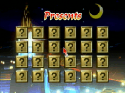

ゲーム画面
クリスマスナイツのゲーム画面を初公開！！
|
11月25日〜12月25日の期間はこのクリスマスナ イツで遊ぶことが出来ます。
その外の期間のナイツに関しては次回11月22日
ナイツのドリームをクリスマスの雰囲気で再構成した、 |

|

|
なんとクリスマスナイツではナイツの色が赤色に！！
ドリームにあるアイテムの形も
BGMも気分を盛り上げるには最高の
|
| クリスマスイブにはサンタが夜空を横切る！？ | 今回の冒険はこのギルウイングが 星を奪ってしまったことが始まりだ！！ |
|---|---|
 こんな画面を入手したよ。 うしろに見えるのはサンタクロースとトナカイ？ クリスマスイブにはサンタが空をかけるらしい。 ほかの日時にいったいどんなことが起こるかは、 次回の更新をおたのしみに！！ |
 クリスマスツリーの星を取り戻すために エリオットとクラリスは又もナイツと冒険に！！ そんな事はお構い無しに真っ赤に体を染めて悠々と飛ぶ ギルウイング！さあナイツといっしょに星を奪い返すた めのファイトの始まりだ！！ |
プレゼントセレクト画面 「クリスマスドリーム」でドリームをクリアし、絵合わせ画面で当てた カードの絵がクリスマスプレゼントの項目に登場するぞ！ いろんなおまけを見たりあそんだりできるんだ！おまけのページへジャンプ!! 
|
 |
(c)SEGA 1996
このページはソニックチームが制作しています。
戻る